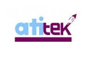

Alireza Taheritajar
A Ph.D. Researcher passionate about cutting-edge AI technologies. Proficient in Computer Vision, Large Language Models, and MLOps.
Work Experience

Augusta University
Graduate Research Assistant
-
ARVR Lab: Applying Artificial Intelligence applications in AR/VR devices under the supervision of
Dr. Jason Orlosky
(May 2024 – Present)
-
Researched cyber security concepts focusing on side-channel attacks under the supervision of
Dr. Reza Rahaeimehr
(Aug 2023 – May 2024)
AIEX
Lead Machine Learning Engineer
- Applied deep learning to computer vision problems and participated in related cutting-edge research.
- Developed an AI-based framework for implementation on edge devices and GPU servers in the field of computer vision for visual industrial inspection.
(Feb 2021 – July 2023)
Sina ATI NET
Technical Manager
- Designed and fabricated Vehicle Detection systems for installation on roads and highways.
(Sep 2017 - Mar 2020)

Atitek Faradid Pars
Co-Founder and Technical Manager
- Manufactured industrial robots for use in the food industry.
(Jan 2015 - Sep 2017)
Publications
Acoustic Side Channel Attack on Keyboards Based on Typing Patterns
Alireza Taheritajar, Reza Rahaeimehr
A Survey on Acoustic Side Channel Attacks on Keyboards
Alireza Taheritajar, Zahra Mahmoudpour Harris, Reza Rahaeimehr
A Lightweight Tiny-YOLOv3 Vehicle Detection Approach
Alireza Taheri Tajar, Abbas Ramazani, Muharram Mansoorizadeh
Journal of Real-Time Image Processing
Automatic Image Description with Attention Mechanism and Repetitive Language Model
Heidari, E., Abdolmaleki, M., Taheri Tajar, A., Mansoorizadeh, M., Dezfoulian, M.
4th National Conference on Computer, Information Technology and Application of Artificial Intelligence (In Persian)
Curriculum

Augusta University, Augusta, Georgia
Ph.D. in Computer and Cyber Sciences
GPA: 4.0/4.0 | (Aug 2023– Present)
Bu-Ali Sina University, Iran
Master of Science in Electrical and Control Engineering
Dissertation Title: “Counting, Classifying, and Detecting the Speed of Vehicles Based on Computer Vision”
GPA: 3.31/4.0 | (Sep 2016– Sep 2019)
Bu-Ali Sina University, Iran
Bachelor of Engineering in Electrical Engineering
Dissertation Title: “Design and Fabrication of Camera Robot”
GPA: 3.25/4.0 | (Sep 2012– Sep 2016)
- Vice President of Computer & Cyber Graduate Student Organization, Augusta University - 2023
- Head of Entrepreneurship Student Committee, Bu-Ali Sina University - 2018
- Member of the Executive Committee of the 14th Alumni Conference of the Festival of Nations - 2016
- Head of Electrical and Robotic Student Committee, Bu-Ali Sina University - 2015
- Coordinator of 1st Conference of Industry Relationship with University - 2013


Technical Skills
Programming Languages
Python, C, C++, MATLAB, Embedded C

Machine Learning
TensorFlow, PyTorch, Hugging Face, LangChain, OpenCV, Librosa, TensorRT, TFLite, Keras, Detectron2, MLflow
Databases
MySQL, MongoDB, PostgreSQL

General
Linux, Windows, Docker, Git, Django, Flask, Jupyter

Cloud Platforms
Google Cloud Platform (GCP), Microsoft Azure

Embedded Boards
NVIDIA Jetson Nano, Raspberry Pi, Arduino
Get In Touch